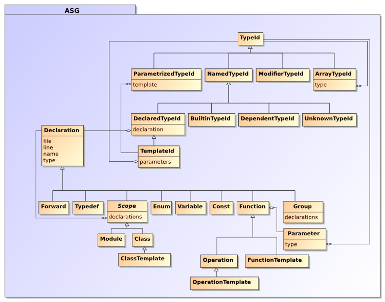

Scripting and extending Synopsis
Often it isn’t enough to provide textual options to the synopsis tool. The processors that are at the core of the synopsis framework are highly configurable. They can be passed simple string / integer / boolean type parameters, but some of them are also composed of objects that could be passed along as parameters.
While synopsis provides a lot of such building blocks already, you may want to extend them by subclassing your own.
In all these cases scripting is a much more powerful way to let synopsis do what you want. This chapter explains the basic design of the framework, and demonstrates how to write scripts using the built-in building blocks as well as user extensions
The Abstract Semantic Graph
At the core of synopsis is a representation of the source code to be analyzed called an Abstract Semantic Graph (ASG). Language-specific syntax gets translated into an abstract graph of statements, annotated with all the necessary metadata to recover the important details during further processing.
At this time only one particular type of statements is translated into an ASG: declarations. This can be declarations of types, functions, variables, etc. Attached to a declaration is a set of comments that was found in the source code before the declaration. It is thus possible to provide other metadata (such as code documentation) as part of these comments. A variety of comment processors exist to extract such metadata from comments.
The Processor class
The Processor class is at the core of the Synopsis framework. It is the basic building block out of which processing pipelines can be composed.
The requirement that processors can be composed into a pipeline has some important consequences for its design. The process method takes an ir argument, which it will operate on, and then return. It is this ir that forms the backbone of the pipeline, as it is passed along from one processor to the next. Additionally, parameters may be passed to the processor, such as input and output.
def process(self, ir, **keywords):
self.set_parameters(keywords)
self.ir = self.merge_input(ir)
# do the work here...
return self.output_and_return_ir()
Depending on the nature of the processor, it may parse the input file as source code, or simply read it in from a persistent state. In any case, the result of the input reading is merged in with the existing asg.
def process(self, ir, **keywords):
self.set_parameters(keywords)
for file in self.input:
self.ir = parse(ir, file))
return self.output_and_return_ir()
Similarly with the output: if an output parameter is defined, the ir may be stored in that file before it is returned. Or, if the processor is a formatter, the output parameter may indicate the file / directory name to store the formatted output in.
def process(self, ir, **keywords):
self.set_parameters(keywords)
self.ir = self.merge_input(ir)
self.format(self.output)
return self.ir
Composing a pipeline
With such a design, processors can simply be chained together:
A parser creates an IR, which is passed to the linker (creating a table of contents on the fly) which passes it further down to a formatter.
parser = ...
linker = ...
formatter = ...
ir = IR()
ir = parser.process(ir, input=['source.hh'])
ir = linker.process(ir)
ir = formatter.process(ir, output='html')
And, to be a little bit more scalable, and to allow the use of dependency tracking build tools such as make, the intermediate IRs can be persisted into files. Thus, the above pipeline is broken up into multiple pipelines, where the ‘output’ parameter of the parser is used to point to IR stores, and the ‘input’ parameter of the linker/formatter pipeline then contains a list of these IR store files.
Parse source1.hh and write the IR to source1.syn:
parser.process(IR(), input = ['source1.hh'], output = 'source1.syn')
Parse source2.hh and write the IR to source2.syn:
parser.process(IR(), input = ['source2.hh'], output = 'source2.syn')
Read in source1.syn and source2.syn, then link and format into the html directory:
formatter.process(linker.process(IR(), input = ['source1.syn', 'source2.syn']), output = 'html')
Writing your own synopsis script
The synopsis framework provides a function process that lets you declare and expose processors as commands so they can be used per command line:
#
# Copyright (C) 2006 Stefan Seefeld
# All rights reserved.
# Licensed to the public under the terms of the GNU LGPL (>= 2),
# see the file COPYING for details.
#
from Synopsis.process import process
from Synopsis.Processor import Processor, Parameter, Composite
from Synopsis.Parsers import Cxx
from Synopsis.Parsers import Python
from Synopsis.Processors import Linker
from Synopsis.Processors import Comments
from Synopsis.Formatters import HTML
from Synopsis.Formatters import Dot
from Synopsis.Formatters import Dump
class Joker(Processor):
parameter = Parameter(':-)', 'a friendly parameter')
def process(self, ir, **keywords):
# override default parameter values
self.set_parameters(keywords)
# merge in IR from 'input' parameter if given
self.ir = self.merge_input(ir)
print 'this processor is harmless...', self.parameter
# write to output (if given) and return IR
return self.output_and_return_ir()
cxx = Cxx.Parser(base_path='../src')
ss = Comments.Translator(filter = Comments.SSFilter(),
processor = Comments.Grouper())
ssd_prev = Comments.Translator(filter = Comments.SSDFilter(),
processor = Composite(Comments.Previous(),
Comments.Grouper()))
javadoc = Comments.Translator(markup='javadoc',
filter = Comments.JavaFilter(),
processor = Comments.Grouper())
rst = Comments.Translator(markup='rst',
filter = Comments.SSDFilter(),
processor = Comments.Grouper())
process(cxx_ss = Composite(cxx, ss),
cxx_ssd_prev = Composite(cxx, ssd_prev),
cxx_javadoc = Composite(cxx, javadoc),
cxx_rst = Composite(cxx, rst),
link = Linker(),
html = HTML.Formatter(),
dot = Dot.Formatter(),
joker = Joker(parameter = '(-;'))
With such a script synopsis.py it is possible to call:
python synopsis.py cxx_ssd --output=Bezier.syn Bezier.h
to do the same as in Chapter 2, Using the synopsis tool, but with much more flexibility. Let’s have a closer look at how this script works: Importing all desired processors
As every conventional python script, the first thing to do is to pull in all the definitions that are used later on, in our case the definition of the process function, together with a number of predefined processors. Composing new processors
As outlined in the section called “Composing A Pipeline”, processors can be composed into pipelines, which are themselfs new (composite) processors. Synopsis provides a Composite type for convenient pipeline construction. Its constructor takes a list of processors that the process method will iterate over.
Defining New Processors
New processors can be defined by deriving from Processor or any of its subclasses. As outlined in the section called “The Processor class”, it has only to respect the semantics of the process method.
Exposing The Commands
With all these new processrs defined, they need to be made accessible to be called per command line. That is done with the process function. It sets up a dictionary of named processors, with which the script can be invoked as:
python synopsis.py joker
which will invoke the joker’s process method with any argument that was provided passed as a named value (keyword).